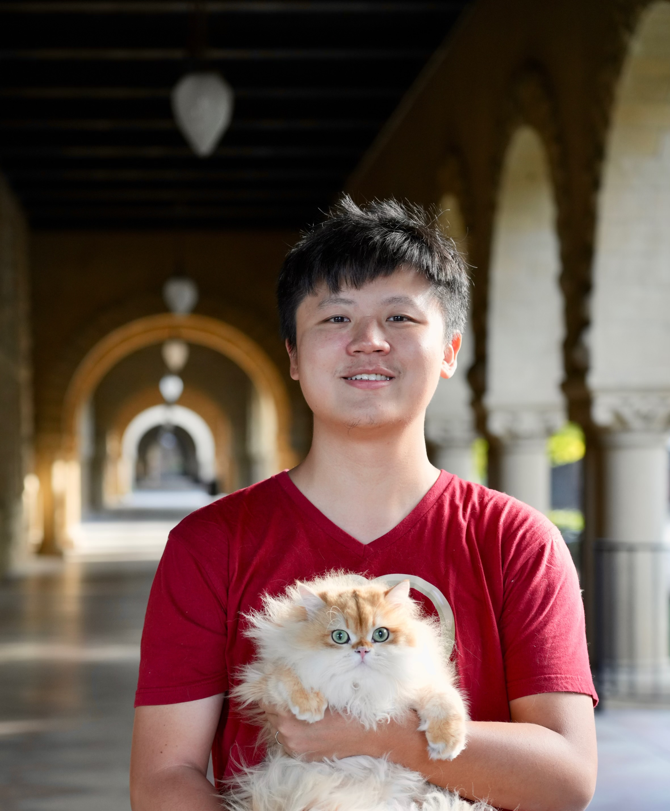

Associate Professor · Zhizhen School, Chinese University of Hong Kong
I work in representation theory, arithmetic geometry, height functions and related analysis / statistics. I received my PhD from MIT in 2022 supervised by Wei Zhang.
Attached is my CV. Research topics:Special functions and their integrals / volumes (with arithmetic kernels) on geometric spaces have fundamental applications. Still only a few are completely proved, with unavoidable local ramifications and archimedean analysis. I aim to find new features, good directions and explicit quantitative solutions on problems in Diophantine / automorphic world (+ analogs).

Email
zyuzhang[at]stanford.edu / zhiyuzhangmath[at]gmail.com
Office
Room 382-C, Sloan Mathematical Center
I enjoy teaching, first principles, basic questions, motivations, down-to-earth examples and applications.
Do we know everything on modular / Shimura curves, Hilbert variants, unitary / orthogonal variants, e.g. non-tempered part?
News
- (2026/8) The Gross-Zagier formula, 40 years later, , Cambridge, MA.
- (2026/7) ICM 2026 , Pennsylvania Convention Center, Philadelphia, Pennsylvania.
- (2026/6) FrontierMath: Open Problems workshop, Epoic AI, Berkeley.
- (2026/6) Summer Workshop on Character Sheaves on Loop Groups, University of Minnesota.
- (2026/5) AI and number theory , American Institute of Mathematics, Pasadena, California.
- (2026/3) New p-adic perspectives on canonical integral models for Shimura varieties , American Institute of Mathematics, Pasadena, California.
- (2026/2) Around the Langlands program, Marseille, France (Thematic Month).
- (2026/1) Conference Talk at Relative Langlands Program , Institute for Mathematical Sciences, NUS.
- (2025/12) Seminar Talk on Elliptic units for complex cubic fields, Stanford University.
- (2025/11) Conference Talk at Arithmetic Geometry in Shenzhen , 2025.
- (2025/9) Co-organizer of the Representation Theory Seminar at Stanford.
- (2025/9) A new paper Central values of Asai L-functions and twisted Gan--Gross--Prasad conjecture: relative trace formulas (with Weixiao Lu and Danielle Wang).
- (2025/9) Teaching undergraduate algebraic geometry at Stanford University, and a topic course on local theta correspondence, following the book of Gan-Kudla-Takeda and works of Sun-Zhu.
- (2025/8) Teaching algebraic geometry, undergraduate summer school on number theory, Peking University, using textbooks of Gortz-Wedhorn I+II, Aug 4-22.
- (2025/7) New Tools in the Local and Global Langlands Programs , Hangzhou.
- (2025/7) A talk at HO#T DAY WORKSHOP , Institute for advanced study in mathematics, Hangzhou.
- (2025/6) 3 Talks at Morningside Center of Mathematics on ABC of Langlands program, arithmetic harmonic analysis and cycles on Shimura varieties.
- (2025/5) Conference Talk at 37th Automorphic Forms Workshop .
- (2025/4) A new paper On unitary Shimura varieties at ramified primes. (with Yu Luo and Andreas Mihatsch).
- (2025/4) Colloquium talk on programs around L-functions, non-reductive cycles and more questions at Rutgers University.
- (2025/4) Research talk on non-reductive periods and L-functions at University of Michigan.
- (2025/4) A new paper on Weighted cycles on Rapoport--Zink spaces with almost-self dual level structure. (with Qiao He and Baiqing Zhu).
- (2025/3) Reporter for Arbeitsgemeinschaft: Relative Langlands Duality .
- (2025/2) Seminar Talk on Anti-spherical quotient and Iwahori-Whittaker category (Arkhipov-Bezrukavnikov Equivalence), geometric representation theory, Stanford.
- (2025/2) A new paper on Non-reductive cycles and twisted arithmetic transfers for Shimura curves .
- (2025/1) Conference Talk on Arithmetic aspects of automorphic forms and automorphic representations , Kyoto University.
- (2025/1) Teaching MATH 145 (on Fulton) and MATH 216B on Algebraic Geometry (on stacks project and Hartshorne).
- (2024/12) Visiting MIT, Boston.
- (2024/11) Research talk at POSTECH-PMI Number Theory Seminar , Korea.
- (2024/10) Attending Oberwolfach Seminar: Reduction of Arithmetic Varieties .
- (2024/9) Teaching a topic course on Function Field Arithmetic (type A), and an algebraic geometry course focusing on quasi-coherent sheaves (as linearizations).
- (2024/8) A new paper with X. Griffin Wang on spherical relative Fundamental Lemmas .
- (2024/7) Conference talk at BIRS workshop Branching Problems for Representations of Real, p-Adic and Adelic Groups , Kelowna, Canada.
- (2024/6) A new paper on Non-reductive special cycles and twisted arithmetic fundamental lemmas (inspired by relative Langlands program).
- (2024/6) Conference Talk at Simons Symposium: Periods and L-values of Motives (2024), Krün, Germany.
- (2024/4) Research talk at Stanford Number Theory seminar.
- (2024/4) Conference talk at the AMS Sectional Meetings , Howard University, Washington, DC.
- (2024/3) Senior participant of Arizona Winter School 2024: Abelian Varieties.
- (2024/3) Teaching MATH 263C Topics in Representation Theory: Relative Langlands duality, and MATH 145 Algebraic Geometry.
- (2024/2) Research talk at Number Theory / Representation Theory Seminar, University of Wisconsin - Madison .
- (2024/1) Problem list for the AIM workshop arithmetic intersection theory on Shimura varieties.